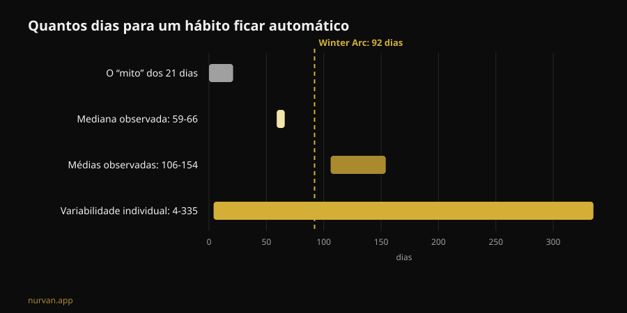
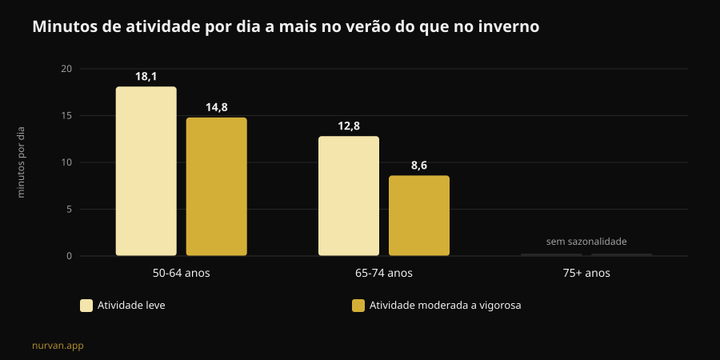

O Winter Arc funciona? O que dizem os estudos
O Winter Arc é o desafio do momento: três meses de disciplina total, de 1 de outubro a 1 de janeiro, com uma lista de regras para cumprir todos os dias. A promessa é chegar a janeiro "transformado". Li sete trabalhos indexados sobre formação de hábitos, sazonalidade da atividade física e planeamento do comportamento, e o resultado é mais interessante do que um simples sim ou não: a tendência acerta no momento escolhido e erra em quase todo o método.

Em resumo
- Os 21 dias não existem. A revisão sistemática mais recente sobre o tempo necessário para um comportamento de saúde ficar automático reporta uma mediana de 59-66 dias e médias entre 106 e 154 dias, com variabilidade individual de 4 a 335 dias (Singh et al., 2024).
- Noventa e dois dias chegam para metade das pessoas. A duração "oficial" do desafio cobre a mediana, mas quem está no lado lento da distribuição fica sem calendário antes de o hábito assentar.
- O inverno não é uma desculpa inventada. Medido com acelerómetro, os adultos entre 50 e 64 anos fazem no verão mais 14,8 minutos por dia de atividade moderada a vigorosa e mais 18,1 minutos de atividade leve do que no inverno; dormem também mais 31,8 minutos por noite no inverno (Cepeda et al., 2018).
- A falha do Winter Arc é o dia em que falhas. Em 19.883 pessoas, o tipo de planeamento que realmente medeia a passagem da intenção ao comportamento é o coping planning — o plano B para os imprevistos —, enquanto o simples plano de "quando e onde" não sai significativo (Wang et al., 2025).
- O que constróis não desaparece a 2 de janeiro. Em idosos, 12 a 24 semanas de paragem completa dos pesos não reduziram de forma estatisticamente significativa a massa muscular ganha; a queda só fica clara acima das 31 semanas (Grgic, 2022).

O que é o Winter Arc, na prática
Nascido no TikTok e transformado em formato editorial, o Winter Arc é uma janela de tempo: de 1 de outubro a 1 de janeiro, ou seja, 92 dias. Não existe protocolo. As páginas que o explicam concordam numa coisa só — "disciplina e constância" — e deixam-te a lista de regras, que na versão social típica vira um pacote de cinco ou seis: despertador de madrugada, academia um certo número de vezes por semana, dieta rígida, leitura, duche frio, zero álcool.
Dois elementos dessa estrutura têm fundamento. O primeiro é a escolha do período: o inverno é mesmo o momento em que a atividade cai. O segundo é a ideia de escrever os objetivos e ir marcando: o self-monitoring é uma das técnicas mais usadas nas intervenções digitais sobre atividade física (Omkar et al., 2026).
O resto — a duração com prazo, o número de regras, a lógica da sequência que não se pode quebrar — é decoração narrativa. E uma das três faz estragos.
O mito dos 21 dias: os números reais
O número dos 21 dias circula há décadas e não vem de um estudo sobre hábitos. A revisão sistemática com meta-análise de Singh e colegas, publicada no final de 2024, reuniu 20 estudos com 2.601 pessoas que mediam a automaticidade de comportamentos de saúde: atividade física, beber água, fio dental, alimentação, redução do sedentarismo.
Quatro desses estudos reportam quanto tempo é preciso para chegar à automaticidade. As medianas ficam entre 59 e 66 dias. As médias entre 106 e 154: mais altas porque há quem demore muito mais. E o dado que mais te interessa é o intervalo individual observado: de 4 a 335 dias.
Não é um detalhe técnico. Quer dizer que duas pessoas que começam no mesmo 1 de outubro com o mesmo treino podem chegar a meados de janeiro com uma delas no automático e a outra ainda a negociar consigo mesma todas as noites. E a segunda não é menos disciplinada: está dentro de um intervalo normal.
Da mesma revisão vem a parte útil. Na força do hábito pesam a frequência, o momento do dia, o tipo de comportamento, o facto de o hábito ser escolhido pela pessoa e não imposto, o julgamento afetivo sobre aquele gesto e a presença de hábitos "preparatórios". As práticas matinais e os comportamentos auto-escolhidos saem como os mais fortes. Os autores assinalam também o limite do trabalho: 11 dos 20 estudos têm risco de viés elevado e o número de estudos é pequeno.
Traduzido para a linguagem da tendência: uma regra que escolheste tu vale mais do que cinco copiadas de um carrossel.
O inverno não é desculpa: a queda está medida
Aqui o Winter Arc apanha algo real. O estudo de Roterdão colocou um acelerómetro no pulso de 1.116 pessoas durante sete dias cada uma, entre 2011 e 2016, e comparou as estações.
Nos adultos entre 50 e 64 anos, a atividade moderada a vigorosa no verão é 14,8 minutos por dia mais alta do que no inverno, e a atividade leve 18,1 minutos por dia. Nos jovens idosos, entre 65 e 74 anos, a diferença é de 8,6 e 12,8 minutos. Acima dos 75 a sazonalidade desaparece. O sono noturno vai ao contrário: mais 31,8 minutos no inverno no grupo dos 50-64.
Dois detalhes mudam a leitura. O primeiro: o padrão explica-se por temperatura ambiente e horas de luz, não pelo carácter. O segundo, o mais incómodo: o comportamento sedentário não mostra sazonalidade. Traduzindo, no inverno não nos sentamos mais — mexemo-nos menos. Desaparece a parcela de movimento voluntário, aquela que decides.
Portanto, a ideia de fazer alguma coisa em novembro não é histeria de redes sociais. É a estação em que a margem se perde. Os próprios autores concluem que interromper o sedentarismo com atividade leve é um bom ponto de partida.

O defeito de projeto: não há plano para o dia em que falhas
É aqui que o desafio parte, e não é um problema de força de vontade.
O modelo mental do Winter Arc é a sequência que não se interrompe: 92 quadradinhos para marcar. O que significa que o protocolo não prevê o dia em que ficas doente, trabalhas até às nove ou o carro avaria. Quando acontece, a sequência está quebrada e o desafio já falhou — em dezembro, com três boas semanas atrás.
A investigação sobre planeamento diz exatamente onde intervir. Uma meta-análise com 41 estudos aleatorizados e 5.439 pessoas mediu o efeito das intervenções de planeamento na atividade física: SMD 0,35 (intervalo de confiança 95% de 0,25 a 0,44), ou seja, um efeito pequeno a moderado mas consistente, melhor quando há reforços durante o seguimento (Peng et al., 2022).
E um trabalho de 2025 desmontou o mecanismo com um modelo de equações estruturais em 19.883 pessoas e 49 estudos. A intenção prediz o comportamento (β = 0,416). Mas dos dois tipos de plano, só o coping planning — "o que faço se chover, se sair tarde, se falhar segunda-feira" — medeia de forma significativa a passagem da intenção ao facto (β = 0,067, p < 0,001). O action planning puro, o clássico "terça e quinta às 19h na academia", no mesmo modelo não sai significativo (β = -0,001).
As duas análises não dizem o mesmo sobre o action planning, e vale a pena explicitá-lo: nos ensaios de Peng, as intervenções baseadas em action planning funcionavam melhor; no modelo de Wang, é o coping planning que faz o trabalho de mediação. O que fica de pé em ambos é que planear vence decidir na hora, e que o plano para os imprevistos não é um acessório.
O Winter Arc, tal como circula, só tem a primeira metade: regras, horários, quadradinhos. Não tem a segunda.
O que diz mesmo a investigação
| Afirmação comum | Veredito | Fonte |
|---|---|---|
| "São precisos 21 dias para criar um hábito" | Desmentido: mediana 59-66 dias, intervalo 4-335 | Singh et al., 2024 |
| "Noventa e dois dias chegam para te transformar" | A precisar: cobrem a mediana, não a cauda lenta | Singh et al., 2024 |
| "No inverno é só questão de motivação" | A precisar: a queda está medida e ligada à luz e à temperatura | Cepeda et al., 2018 |
| "Se falhas um dia a sequência quebra, recomeça" | Desmentido como estratégia: é preciso o plano B, não o reset | Wang et al., 2025; Peng et al., 2022 |
| "Se paras depois do desafio perdes tudo em duas semanas" | Desmentido nos prazos: 12-24 semanas de paragem sem perda significativa (dados em idosos) | Grgic, 2022 |
| "É preciso uma lista de cinco regras por dia" | Sem suporte: contam a frequência e a escolha pessoal | Singh et al., 2024 |
| "Não é preciso app, é precisa disciplina" | A precisar: efeito pequeno mas positivo das ferramentas digitais | Omkar et al., 2026 |
E se parares a 2 de janeiro?
O medo que sustenta os desafios com prazo é este: acaba, desisto, perco tudo. Os números sobre destreino são mais generosos do que isso.
A meta-análise de Grgic reuniu seis estudos em idosos que tinham treinado força durante 9-24 semanas, com um aumento claro da massa muscular (d = 0,99). Nos períodos de paragem completa, a massa cai (d = -0,83) — mas o subgrupo que parava 12-24 semanas não mostra redução estatisticamente significativa (d = -0,60, intervalo de -1,21 a 0,01). A queda torna-se clara acima das 31 semanas. Importante: é uma amostra de idosos, não de jovens treinados há anos, e o dado refere-se ao tamanho do músculo, não à força.
A força, aliás, é a parte mais frágil: ao longo da vida, força e potência caem até oito vezes mais depressa do que a massa muscular (Fyfe et al., 2021). E é também a mais fácil de defender com pouco. Essa mesma revisão reúne a evidência sobre doses mínimas: volumes de sessão baixos com cargas altas e poucas sessões, ou micro-sessões frequentes com pouco ou nenhum equipamento, melhoram a força e a capacidade funcional. Com uma nota que pesa no Winter Arc: volumes de treino mais altos associam-se a mais desconforto e menos prazer, e isso joga contra a adesão.
Ou seja: o programa mais duro não é o programa que resiste.
Como aplicar
Se queres a moldura do Winter Arc sem o seu defeito de projeto:
- Escolhe uma regra, não cinco. A que escolheste tu, não a do vídeo. A escolha pessoal está entre os determinantes da força do hábito.
- Mantém a frequência alta e a exigência baixa. Três sessões curtas que fazes valem mais do que quatro longas que falhas. O prazer percebido não é um vício: é uma variável de adesão.
- Escreve o plano B antes de precisares dele. "Se falhar terça, vou quarta." "Se a academia estiver fechada, 20 minutos em casa." É isto, e não o quadradinho marcado, que a investigação associa ao comportamento real.
- Agarra-te à luz. Como a queda invernal está ligada à temperatura e às horas de luz, põe a sessão nas faixas em que o ambiente ajuda e tira atrito: saco pronto, trajeto curto, horário fixo.
- Apaga a data de validade. Um contador que zera a 1 de janeiro é o oposto de um hábito. Se chegas a janeiro e o gesto ainda não é automático, estás na norma estatística: não acabaste, estás a continuar.
- Mede as cargas, não os dias seguidos. Uma fila de 92 quadradinhos não te diz se estás a progredir. Uma progressão de carga diz — e sobrevive a uma segunda-feira falhada.
Sobre o que pedir a quem te acompanha à distância temos um artigo dedicado: o coaching online funciona?. Se preferes o quadro mais amplo do que aguenta e do que não aguenta entre as modas do setor, pusemo-lo em fila nas tendências fitness 2027.
Nurvan: a constância mede-se nas cargas, não nos quadradinhos
A Nurvan regista cada série, repetição e RIR e mostra-te a progressão real semana a semana: se falhas segunda-feira, o gráfico das cargas fica lá, porque o que conta é a curva e não a fila de dias seguidos. As séries de aquecimento propostas automaticamente e o histórico dos exercícios baixam o atrito nas noites em que treinas contrariado — que no inverno são a maioria.
Perguntas frequentes
Quanto tempo demora mesmo a criar um hábito de treino?
Segundo a revisão sistemática mais recente, a mediana para chegar à automaticidade nos comportamentos de saúde é de 59-66 dias, com médias de 106-154 dias e variabilidade individual de 4 a 335 dias. Os 21 dias não vêm desta literatura.
O Winter Arc faz mal?
O formato em si não é perigoso: é uma janela de tempo. Os problemas nascem das versões com muitas regras rígidas ao mesmo tempo, da lógica do "recomeça do zero" depois de uma falha e dos volumes de treino altos e repentinos em quem parte do sedentarismo. Se tens dor, uma condição de saúde em curso ou estás a recuperar de uma lesão, fala com um médico antes de começar.
Melhor um desafio de 90 dias ou sem prazo?
Os dados não comparam diretamente os dois formatos. O que sabemos é que o prazo não tem papel na formação do hábito, enquanto a frequência, a escolha pessoal e o planeamento dos imprevistos têm. Um prazo pode ajudar a arrancar; mantê-lo como meta final é que é o risco.
Se parar em janeiro, quanto perco?
Na meta-análise em idosos, 12-24 semanas de paragem completa dos pesos não produziram redução estatisticamente significativa da massa muscular; acima das 31 semanas sim. Não são dados sobre jovens treinados e referem-se ao tamanho do músculo, não à força. De qualquer forma, poucas sessões curtas chegam para defender muito mais do que se pensa.
Leia também
- O coaching online funciona? O que dizem os estudos — o que um treinador à distância tem de controlar para valer tanto como um na sala.
- Tendências fitness 2027: o que funciona mesmo — as modas do setor passadas pelo filtro da evidência.
- Treino gerado por IA: o que dizem os estudos — quando um programa automático aguenta e quando não.
Fontes
- Singh B, Murphy A, Maher C, Smith AE, 2024. Time to Form a Habit: A Systematic Review and Meta-Analysis of Health Behaviour Habit Formation and Its Determinants. Healthcare (Basel) 12(23):2488. PMID 39685110 · DOI 10.3390/healthcare12232488
- Cepeda M, Koolhaas CM, van Rooij FJA, Tiemeier H, Guxens M, Franco OH, Schoufour JD, 2018. Seasonality of physical activity, sedentary behavior, and sleep in a middle-aged and elderly population: The Rotterdam study. Maturitas 110:41–50. PMID 29563034 · DOI 10.1016/j.maturitas.2018.01.016
- Wang L, Li X, Qiu K, Wang D, 2025. Examining the impact of perceived behavioral control and planning on closing the exercise intention-behavior gap: Insights from a meta-analytic structural equation modeling study. Psychol Sport Exerc 78:102822. PMID 39952422 · DOI 10.1016/j.psychsport.2025.102822
- Peng S, Othman AT, Yuan F, Liang J, 2022. The Effectiveness of Planning Interventions for Improving Physical Activity in the General Population: A Systematic Review and Meta-Analysis of Randomized Controlled Trials. Int J Environ Res Public Health 19(12):7337. PMID 35742582 · DOI 10.3390/ijerph19127337
- Grgic J, 2022. Use It or Lose It? A Meta-Analysis on the Effects of Resistance Training Cessation (Detraining) on Muscle Size in Older Adults. Int J Environ Res Public Health 19(21):14048. PMID 36360927 · DOI 10.3390/ijerph192114048
- Fyfe JJ, Hamilton DL, Daly RM, 2021. Minimal-Dose Resistance Training for Improving Muscle Mass, Strength, and Function: A Narrative Review of Current Evidence and Practical Considerations. Sports Med 52(3):463–479. PMID 34822137 · DOI 10.1007/s40279-021-01605-8
- Omkar A, Bertrand JK, Sadasivan C, et al., 2026. Behaviour change techniques in eHealth interventions for older, frail, or sarcopenic adults: A systematic review and meta-analysis. Digit Health 12:20552076261473804. PMID 42534183 · DOI 10.1177/20552076261473804
Fontes científicas consultadas através da PubMed. Sinais de tendência: a página explicativa da Gymshark sobre o Winter Arc (temporada de 1 de outubro a 1 de janeiro) e a cobertura italiana do termo em My-Personaltrainer, SportOutdoor24 e EroicaFenice, todas sem referências à literatura sobre formação de hábitos. O texto, a estrutura, os gráficos e as verificações deste artigo são originais.
Giammaria Loi é o fundador da Nurvan. Treina com pesos desde 2012, trabalha como personal trainer e treinador certificado FIPE desde 2013 e compete em powerlifting a nível nacional desde 2018. Cada artigo que assina parte dos estudos científicos e chega ao que funciona mesmo no ginásio. Página do autor
Nota: conteúdo informativo, não substitui a opinião de um médico ou de um profissional qualificado. Se tens dor, uma condição de saúde em curso ou estás a recuperar de uma lesão, fala com um médico antes de começar ou mudar um programa de treino.